Distributed image compression
Perceptual Distributed Image Compression via Controlled Stochastic Reconstruction
School of Computer Science and Artificial Intelligence, Wuhan University of Technology
View codeDecoder-side information for perceptual reconstruction
Distributed image compression transmits a target image while a correlated image is available only at the decoder. Distortion-oriented reconstruction can suppress uncertain local variation. Restoring that variation without sufficient correspondence to the target, however, may increase pixel error.
SPDIC uses controlled stochastic refinement of the target latent. Textual side information conditions the refinement, and multiscale visual side information guides the reconstruction. The two forms of guidance address different aspects of the decoder's uncertainty.
Reconstruction scale and correspondence
For corresponding samples in a local block and channel, let β = σX-hat/σX and ρ = Corr(X, X-hat). With equal local means (δ = 0),
PG describes local Gaussian marginals. The image comparisons below use BPP, PSNR, and LPIPS.
Change the target correspondence
Move ρ to examine the distortion cost of restoring β toward 1.
β < ρ
Distortion and PG both decrease as β rises.
ρ < β < 1
Lower PG comes with higher distortion.
β > 1
Distortion and PG both increase.
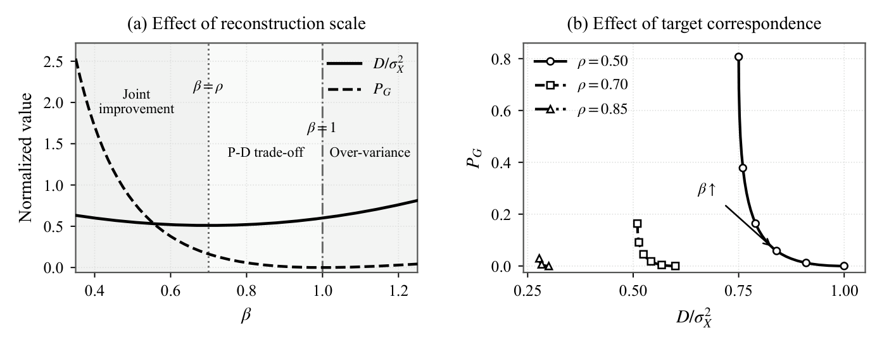
Controlled stochastic refinement
The target encoder operates independently of the correlated image. At the decoder, a BLIP-2 caption is encoded by CLIP to condition one evaluation of a pretrained denoising U-Net. The refined latent is passed to a reconstruction decoder that also receives multiscale visual side information.
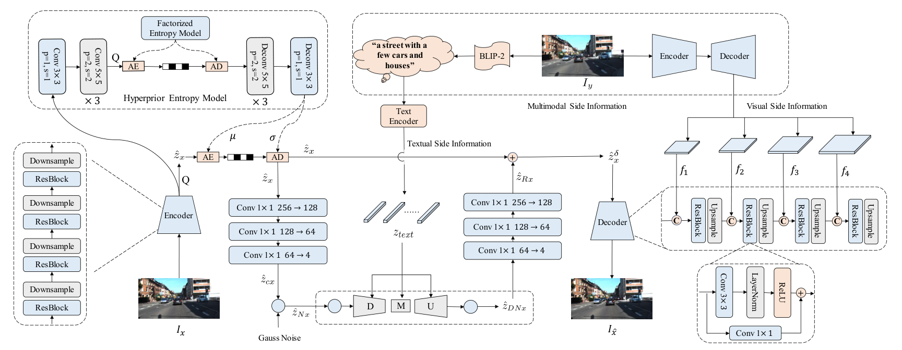
KITTI Stereo and Cityscapes
We evaluate reconstruction at 128 × 256 resolution. The image comparisons report BPP, PSNR, and LPIPS.
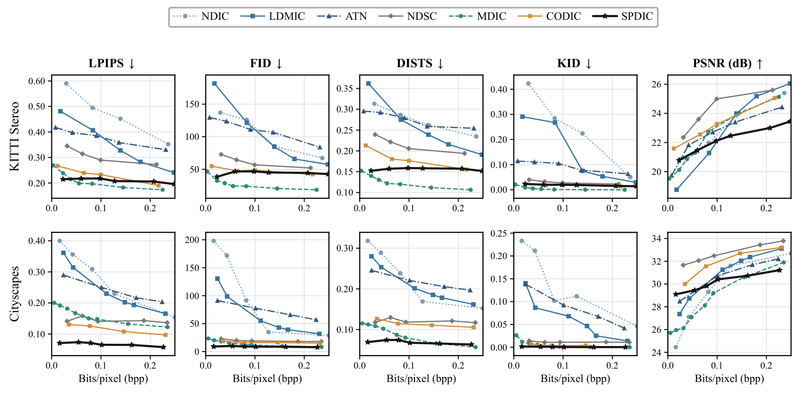
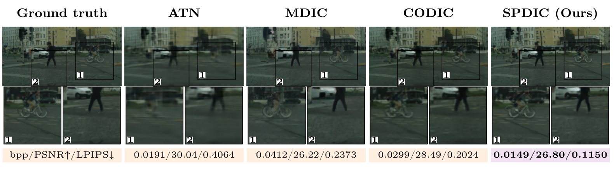
Low-rate reconstructions
KITTI Stereo, sample 0001
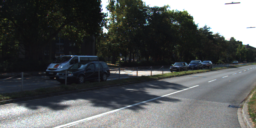
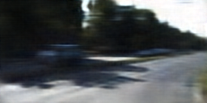
0.0307 / 25.36 / 0.4656
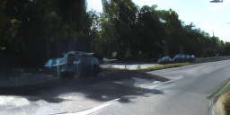
0.0164 / 17.78 / 0.3555
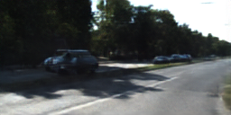
0.0479 / 27.25 / 0.2337
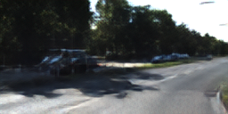
0.0224 / 26.77 / 0.2182
Cityscapes, sample 0336
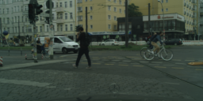
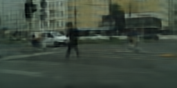
0.0191 / 30.04 / 0.4064
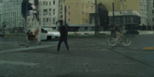
0.0606 / 26.22 / 0.2373
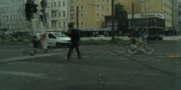
0.0299 / 28.49 / 0.2024
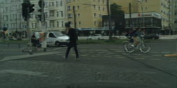
0.0149 / 26.80 / 0.1150
Each value is reported as bpp / PSNR (dB) / LPIPS. Lower LPIPS is better.